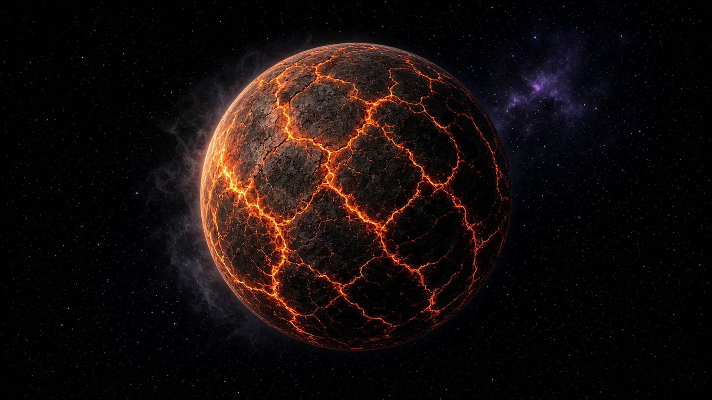
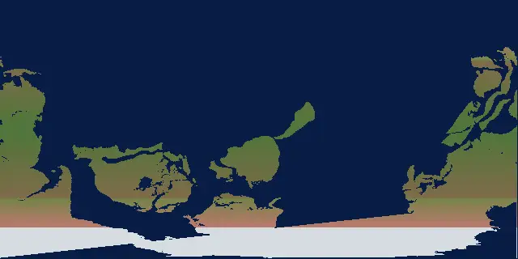
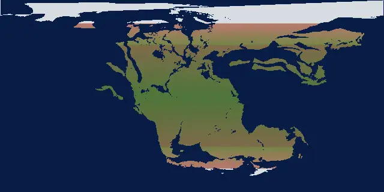

Esv, CC BY-SA 3.0, via Wikimedia Commons
Created by the Founder and SI.
DOVE TUTTO HA INIZIO
Fossili, climi antichi ed ecosistemi perduti, e ciò che possono insegnarci per curare il nostro pianeta oggi.
Saving Planets trova soluzioni senza catastrofismo. Before Saving Planets è dove inizia la storia della Terra.
Dig Quest, la mappa dei fossili, i dinosauri e il tempo profondo. Ogni scaffale apre una parte dell’archivio.
Inizia il Dig QuestEsplora la mappa dei fossiliVisita Saving Planets
ScavoInizia il Dig QuestApri il cursore del tempoTempo profondo
Mappa del mondoMappa del mondoMappa dei fossili (bambini)SmilodonDinosauri
ImparaImparaBambiniInsegnantiMito o realtàMappa dei fossili (bambini)
Dig Quest, la mappa dei fossili, i dinosauri e il tempo profondo. Ogni scaffale apre una parte dell’archivio.
Esv, CC BY-SA 3.0, via Wikimedia Commons

Larry D. Moore, CC BY 4.0, via Wikimedia Commons

Chris Woodrich, CC BY-SA 4.0, via Wikimedia Commons

TheUltimateGrass, CC0, via Wikimedia Commons

James St. John, CC BY 2.0, via Wikimedia Commons
La storia lunga sta su questo scaffale: un mondo fuso, i primi oceani, le mappe misurate e perché esiste questa biblioteca.

Created by the Founder and SI
4,6 miliardi di anni fa
La Terra si apre come lava crepata. Niente oceani ancora, niente vita — un pianeta di fuoco. È il colpo d’occhio. La strada lenta che segue è il motivo di Before Saving Planets: capire il viaggio, non saltarlo.

Created by the Founder and SI
Più antico di 540 milioni di anni
La crosta si raffredda e i primi oceani si raccolgono nelle crepe. Questi continenti non sono ancora i nostri. Questo tratto è un’interpretazione d’artista, indicata come tale — le mappe misurate iniziano a 540 milioni di anni. Gli strati più antichi del Dig Quest sono qui.

Scotese PALEOMAP via GPlates (EarthByte)
540 milioni di anni fa
Da qui le terre sono una ricostruzione PALEOMAP. La camera resta dov’è l’Africa oggi. I continenti derivano in quell’inquadratura. Non si dissolvono l’uno nell’altro.

Scotese PALEOMAP via GPlates (EarthByte)
540 milioni di anni → oggi
Le placche scivolano. I supercontinenti si riuniscono e si spezzano. Un asteroide colpisce. Il ghiaccio avanza e si ritira. Ogni strato del Dig Quest è una tappa di questo viaggio.

National Park Service, public domain
Il motivo di questo sito
I fossili sono una guida da campo per il pianeta che abbiamo ancora. Scava nelle prove, muovi il globo, poi passa a Saving Planets per il lavoro di cura — oceani, foreste, barriere e poli.
Lava e primi oceani: creato dal fondatore e da SI, un’interpretazione artistica, non una fotografia. Da 540 milioni di anni: Scotese PALEOMAP tramite GPlates (EarthByte). L’ultima foto è una stromatolite fossile nel Glacier National Park (National Park Service, pubblico dominio).
Conteggi di questo sito. L’età della Terra è la cifra dello U.S. Geological Survey usata nel Dig Quest.